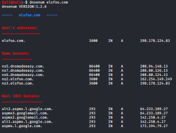

DNSenum
dnsmap is an old tool but still works great for subdomain enumeration and brute
forcing
This is the github page of dnsenum:
https://github.com/fwaeytens/dnsenumfollowing
this way we can install the
software:
apt-get install cpanminus
cpanm String::Random
cd /root/bin/
git clone https://github.com/fwaeytens/dnsenum.git
GENERAL OPTIONS:
--private → Show and save private IPs at the end of
the file domain_ips.txt
--subfile <file> → Write all valid subdomains to this
file
--threads <value> → The number of threads that will perform different
queries.
-
v or
--verbose → verbose output (show all the progress and all the
error messages)
-p or
--pages <value> → The number of Google search
pages to process when scraping names, the default is 20 pages, the -s switch must be
specified.
-s or
--scrap <value> → The maximum number of subdomains
that will be scraped from Google.
BRUTE FORCE OPTIONS:
-f or
--file
<file> → Read subdomains from this file to perform brute force. dnsenum comes with a wordlist file
( /usr/share/dnsenum/dns.txt) containing the most common DNS and sub domain names but we can use also another text
file
dnsenum --file "/usr/share/dnsenum/dns.txt" elsfoo.com
-u or
--update <a|g|r|z> → Update the file specified with the -f
switch with valid subdomains found
-r or
--recursion → Recursion on
subdomains, brute force all discovered subdomains
example:example2:
dnsenum --subfile "/home/kali/Desktop/storeSubdomains.txt" -v -f /usr/share/dnsenum/dns.txt -u a -r elsfoo.com
{kind=link}